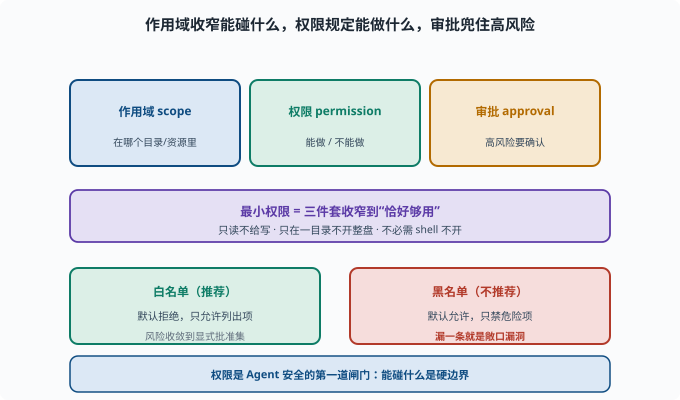

权限与最小化：给 Agent 恰好够用的权限
目标：把"最小权限"从原则变成可执行的安全设计。读完这一页，你能说清作用域、白名单、审批的落地，也知道为什么"权限是 Agent 安全的第一道闸门"。
为什么权限是第一道闸门
Agent 拥有能读写文件、执行命令、访问网络的"手"（08）。一旦权限失控，一次幻觉或注入就可能导致真实破坏。权限就是"Agent 能碰什么"的硬边界，也是第一道、最前的一道防线。
三个核心手段
作用域（scope）：在哪个上下文/目录/资源里
权限（permission）：能做/不能做的规则
审批（approval）：高风险操作要确认
三者的关系不是并列堆叠，而是一条"逐层收窄"的链：作用域先把 Agent 关进一小块上下文，权限再决定它在这块里能做什么，审批则为其中不可逆或高风险的少数操作加一道人工/策略确认。下图把这条链和"最小权限"的收窄目标画在了一起。

看到这张图的重点是"默认最小"：不是从"全部放开"往回删，而是从"什么都不开"往上加，只把任务必需的能力放进白名单。这样即便某一环被绕过，露出面的也只是那一个小小的批准集，而不是整个系统。
最小权限：宁可少给
最小权限（least privilege）：只给完成任务所需的最小能力。
只读场景 → 不给写/删
只在某目录 → 不放开整盘
不必须的 shell → 不给
好处：
缩小攻击面：不暴露的能力无法被滥用
降低误伤：Agent 再笨也不至于删错大片
可审计：需要的能力更少 → 审计清单更短
白名单 vs 黑名单
白名单：默认拒绝，只允许列出项（推荐）
黑名单：默认允许，只禁用危险项（不推荐，漏一条就危险）
安全上强烈倾向默认拒绝 + 白名单。
为什么黑名单注定追不全？因为"危险操作"的集合是开放的：rm -rf 可以写成 rm -r -f，可以 base64 编码后解码执行，可以通过 find -delete 间接实现，可以用脚本语言一行触发。攻击者只需找到一个你没列的形式，防御者却要列出所有形式——不对称性永远偏向攻击方。白名单把这个不对称反转过来：没列出的全都拒绝，攻击者要找的不再是"绕过一条规则"，而是"让白名单里的安全工具组合出危险行为"，难度高得多。
审批：危险操作要"人/策略点头"
对不可逆或高风险操作加审批：
删除/覆盖文件 → 审批
写工作区之外 → 审批
执行未白名单的命令 → 审批
在 deepseek-harness 里，interaction/permission 能力负责这个"请求批准"流程（09-06）。
一个权限决策清单
这个工具是否真需要？ → 不需要则不开
最小范围是什么？ → 目录/网络/能力给到最小
是否需要审批？ → 危险才批
白名单够用吗？ → 尽量白名单
失败时能回滚吗？ → 不可逆要更严
思考题
- 为什么说权限是 Agent 安全的第一道闸门？
- 作用域、权限、审批各管什么？
- 最小权限的核心是什么？举一个例子。
- 为什么推荐"默认拒绝 + 白名单"？
- 判断"要不要审批"的标准是什么？
参考答案
- 因为它硬性决定 Agent"能碰什么"，是防止幻觉/注入造成真实破坏的最前防线；权限失控，后面再多手段也难补救。
- 作用域决定"能看到哪些工具/资源"，权限决定"能做什么"，审批决定"高风险操作要不要确认"。
- 只给完成任务所需的最小能力。例：只读任务不给写/删，只在固定目录跑、不开整盘权限。
- 因为"默认拒绝 + 白名单"意味着未列出的都禁止，把风险收敛到显式批准集；黑名单默认放开，漏一条就是敞口漏洞。
- 操作是否不可逆/高风险/超出最小必要：删除覆盖、写工作区外、未白名单命令等要审批；可逆且必要且在白名单内的可自动。
下一步
- 想把 Agent 关进"笼子" → 11-02 沙箱与隔离。
- 想理解恶意输入如何劫持 → 11-03 提示注入。
- 想复习作用域/权限的架构 → 09-06 作用域与权限。